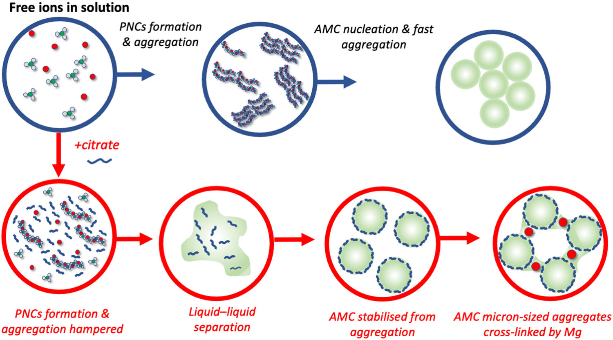
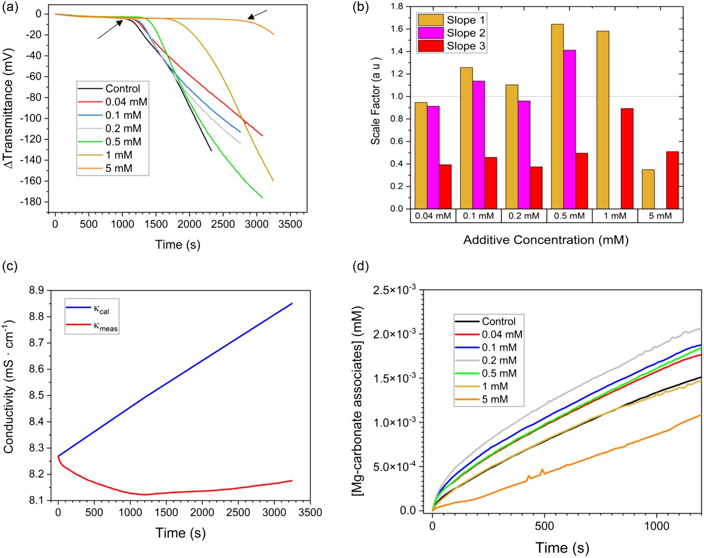
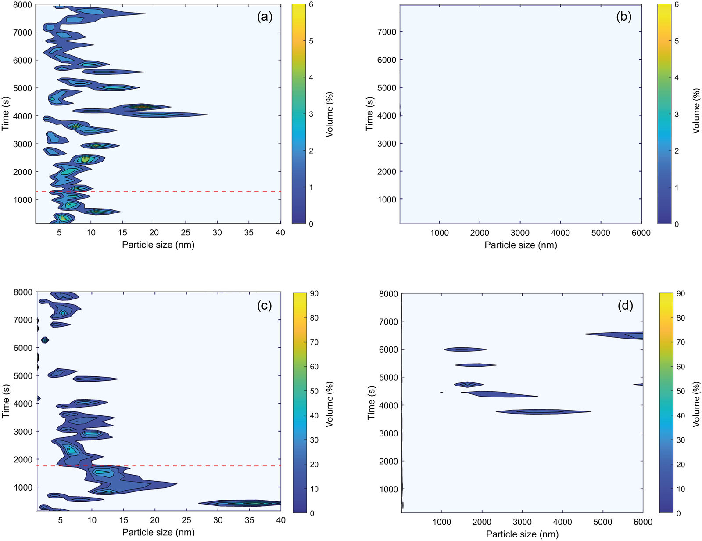
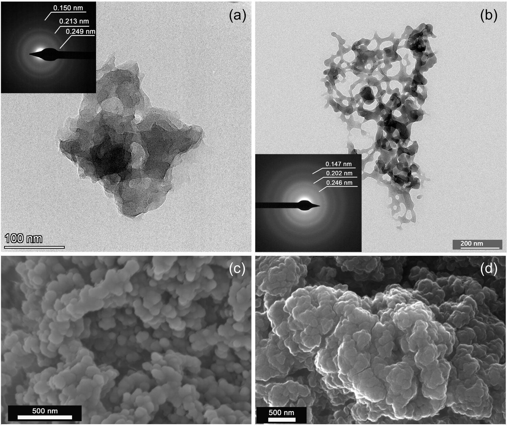

Step 1 of 6
Free ions
Mg²⁺ drips into the carbonate buffer. Magnesium is strongly hydrated: each ion wears a tight shell of water, drawn here as a pale ring. The only difference between the reactors is a little citrate.
Geochemical Perspectives Letters · 2024
Magnesium carbonate could lock CO₂ away in stone, but at the Earth's surface it crystallises full of water. We watched what happens before the first solid exists, and found that a small dose of citrate sends the process down a different route.
Simulated electron diffraction, built from the ring spacings measured on our control sample (Fig. 3a). Diffuse rings and no sharp spots: the signature of an amorphous solid.
Global warming has pushed scientists to look for ways to trap atmospheric CO₂ permanently inside minerals, a strategy called mineral carbonation. Magnesium carbonate is one of the most appealing hosts, because magnesium-rich silicates are abundant on the Earth's surface.
There is a catch. The thermodynamically stable form, magnesite (MgCO₃), does not form under surface conditions, for kinetic reasons. What you get instead is a parade of hydrated phases. They carry extra water, weigh more for every mole of CO₂ they hold, and are less stable.
The route to any of them starts with a transient phase, amorphous magnesium carbonate (AMC), and that first step determines what crystallises later. It has been studied far less than its calcium counterpart. So we looked there, at the moments before any solid appears.
Calculated from the chemical formulae; the CO₂ content is 52, 36 and 32 wt% respectively. Keep the two colours in mind: nesquehonite is where the control ends up, dypingite is where citrate takes it.
How does a simple, low-molecular-weight additive like sodium citrate alter the earliest steps of precipitation, and can it push the system toward less hydrated phases?
50 mM potassium carbonate buffer, with 0.04 to 5 mM tri-sodium citrate
100 mM magnesium chloride, at 0.12 mL per minute
pH 11, fixed by adding NaOH
Transmittance (has a solid appeared?), conductivity (where are the ions going?) and dynamic light scattering (how big are the species?)
At least three times per condition, ten times for the additive-free runs
TEM and electron diffraction, FESEM, XRD, FTIR, TGA/DSC and zeta potential on the solids
Scroll to run them side by side. A schematic after Fig. 4 of the paper, not to scale: the positions are illustrative, the sequence is what we propose from the data.
Step 1 of 6
Mg²⁺ drips into the carbonate buffer. Magnesium is strongly hydrated: each ion wears a tight shell of water, drawn here as a pale ring. The only difference between the reactors is a little citrate.
Step 2 of 6
We keep adding ions, yet conductivity falls: they are pairing up into associates, possibly prenucleation clusters. Ion association is thought to be driven mostly by entropy, from the water released as the ions bind.
Citrate promotes Mg²⁺ dehydration, so there is less to gain. At low doses it still raises Mg binding, but with more citrate binding drops, and the onset of nucleation is delayed further the more citrate you add.
Fig. 1
Step 3 of 6
Without additive, AMC nucleates and aggregates fast. With citrate nucleation is held back, so the system crosses the spinodal limit and separates into a dense, liquid-like phase before any solid forms.
Quenched aliquots caught its dried residue: spherical nanoparticles joined by neck-like bridges. Nothing like it appeared in the control samples.
Fig. 3b
Step 4 of 6
With 1 mM citrate, light scattering sees clusters of about 2 nm grow rapidly to 40 nm, then shrink to 5–10 nm before solid MgCO₃ nucleates, possibly as the liquid dehydrates.
We propose that citrate binds to the surface of the new nanoparticles and forms layers that keep them apart, as it does on gold nanoparticles.
Fig. 2c
Step 5 of 6
As Mg²⁺ keeps rising, it may complex with those citrate chains and tie the particles together. After about 3,500 s, aggregates of 1 to 5 µm show up. They were not detected in the control runs.
Fig. 2d, Fig. 3d
Step 6 of 6
Left to age in the reaction medium, the two amorphous solids recrystallise into different minerals: nesquehonite without citrate, dypingite with it. Less water, less mass per mole of CO₂, and greater stability.
The lattices shown are schematic, not crystal structures. Fig. S-3

This is the published version of what you just scrolled through. The top row is the route without additive. The bottom row is the detour citrate forces on the system.



A small, environmentally friendly carboxylic acid does a job usually associated with far more complex polymers. The explanation is basic: the entropy of hydration water. By lowering the barrier for Mg²⁺ dehydration, citrate reshapes the pathway from the first associates to the final mineral.
The dose decides the outcome. Below 1 mM, citrate accelerates AMC growth and reduces its water content, leading to less hydrated crystalline phases. At higher concentrations it inhibits growth. For carbon storage the direction is the useful one: less hydrated phases need less mass and volume per mole of CO₂, and are chemically more stable, with a positive effect on the effectiveness and cost of CO₂ mineralisation.
The reasoning also travels. Citrate works in a similar way in other mineral systems, which could matter wherever cation dehydration is an essential step. And the early stages of MgCO₃ formation shape more than carbon storage: the phase and microstructure of magnesium carbonates determine how mortars and plasters made with dolomitic lime behave.
Santoro De Vico, F., Bonilla-Correa, S., Pelayo-Punzano, G., Elert, K., Rodríguez-Navarro, C., Ruiz-Agudo, E. (2024) Additive impact on early-stage magnesium carbonate mineralisation. Geochem. Persp. Let. 32, 46–51.
doi.org/10.7185/geochemlet.2441 PDF + Supplementary
Open access under CC BY-NC-ND 4.0. A corrigendum published on 16 March 2026 adds a missing funding acknowledgement; the science is unchanged. Funded in part by the Marie Skłodowska-Curie Action ETN-ITN SUBlime (grant agreement 955986). Full funding details are in the paper. Back to Publications